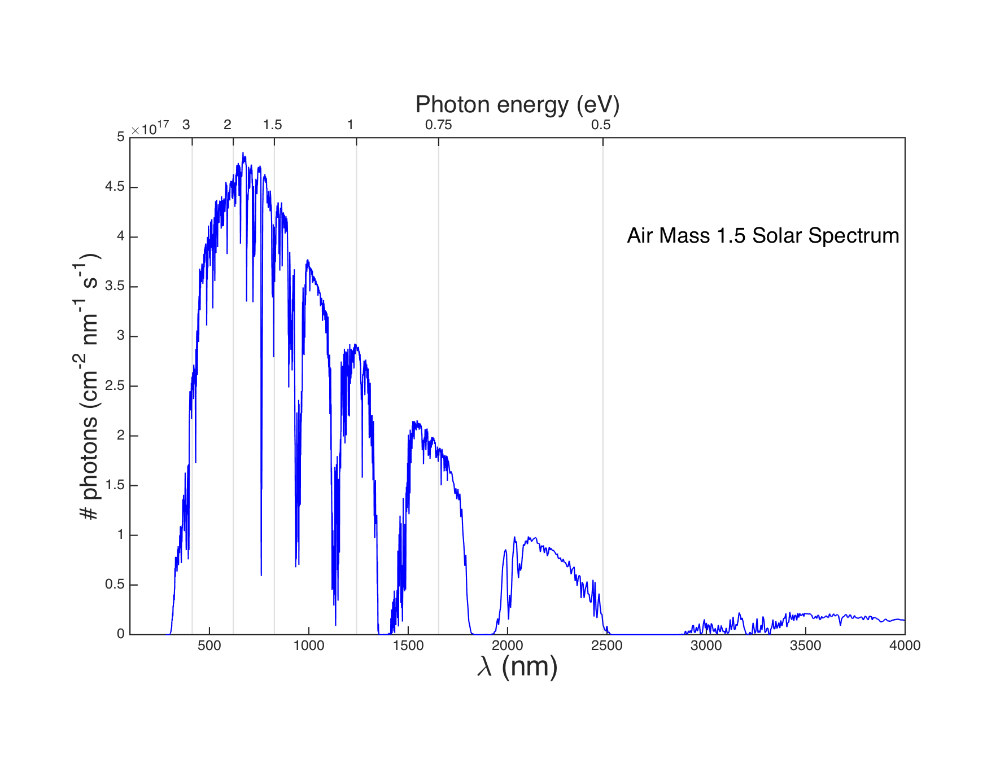

This course is an opportunity to expose upper-level undergraduates and graduate students to methods for utilizing chemistry to convert solar energy (photons) into electricity and fuels. This course focuses on materials chemistry approaches to solar energy converstion, including photovoltaics, photoelectrochemical materials, thermochemical reactions, and thermoelectrics. We will also discuss methods for evaluating the potential of these technologies through energy conversion efficiencies and technoeconomic analysis.
Students will be expected to have an understanding of physical chemistry and thermodynamics, but all relevant details will be discussed in the context of the topic of discussion.